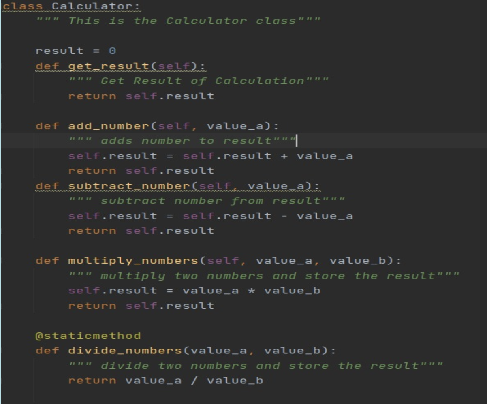
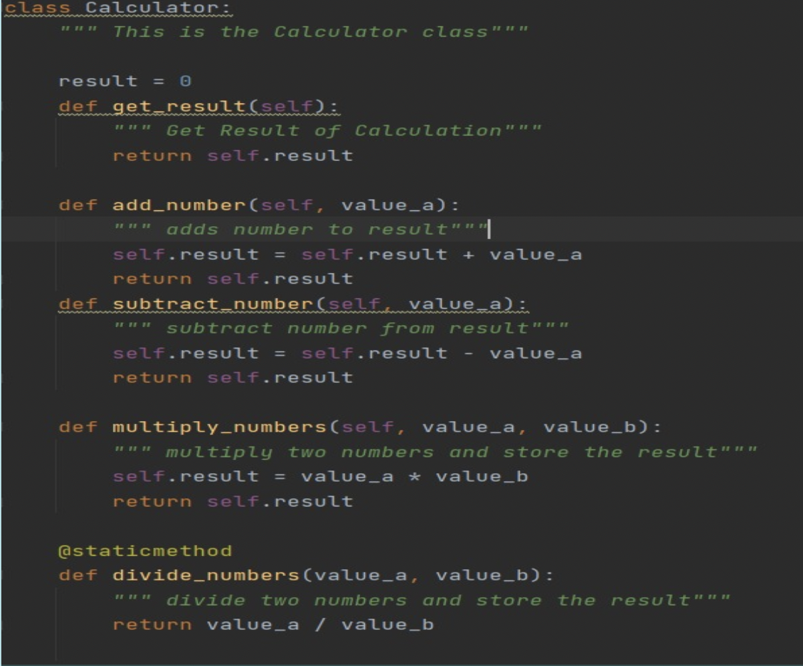
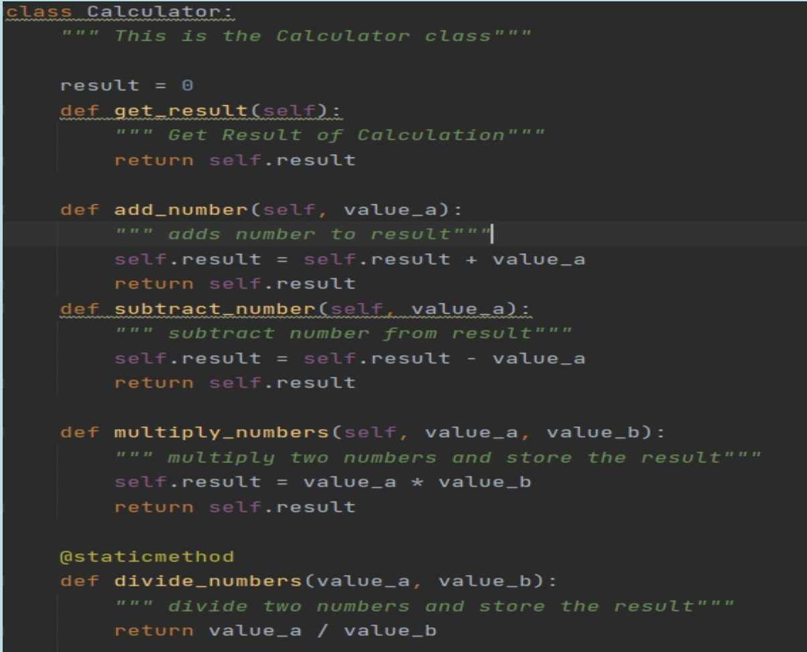
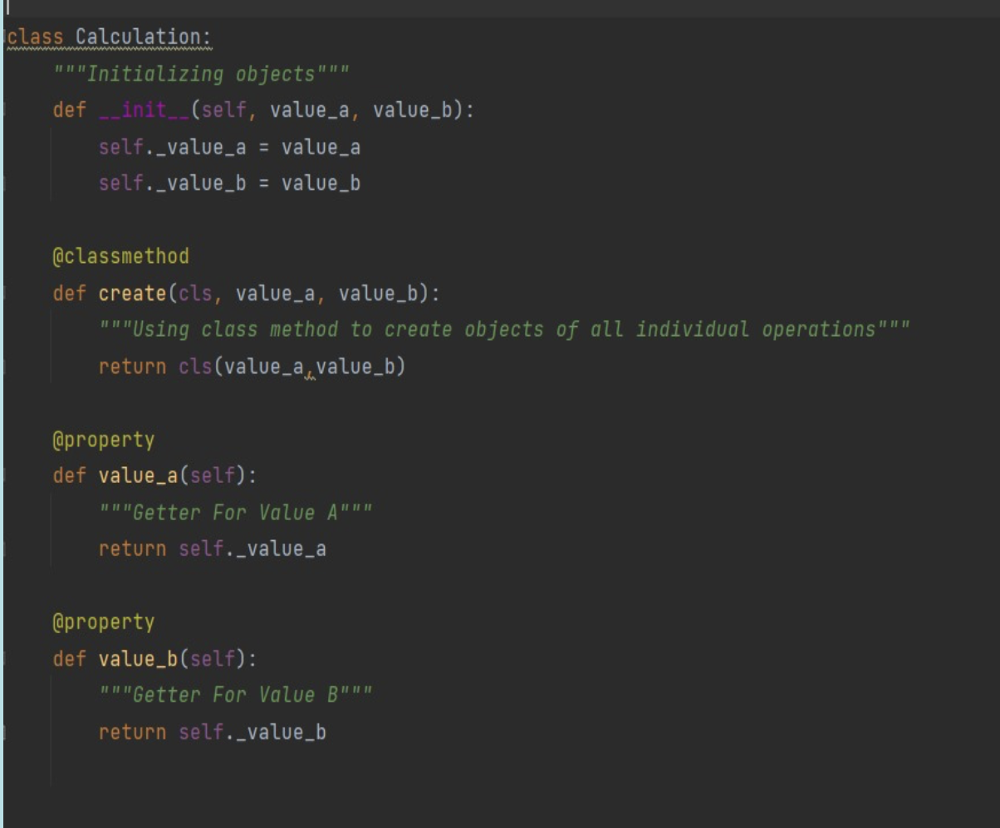

- Encapsulation
Encapsulation in Python is the process of wrapping up variables and methods into a single entity.In programming
a class is an example that wraps all the variables and methods defined inside it. Here
the department acts as the class and student records act like variables and methods

- Inheritance
Inheritance is a concept in object oriented programming where existing classes can be modified by a new class.
The existing class is called the base class and the new class is called the derived class.

- Polymorphism
What is Polymorphism: The word polymorphism means having many forms. In programming
polymorphism means the same function name (but different signatures) being used for different types.

- Abstraction
Abstraction is used to hide the internal functionality of the function from the users.
The users only interact with the basic implementation of the function
but inner working is hidden. User is familiar with that "what function does" but they don't know "how it does.
